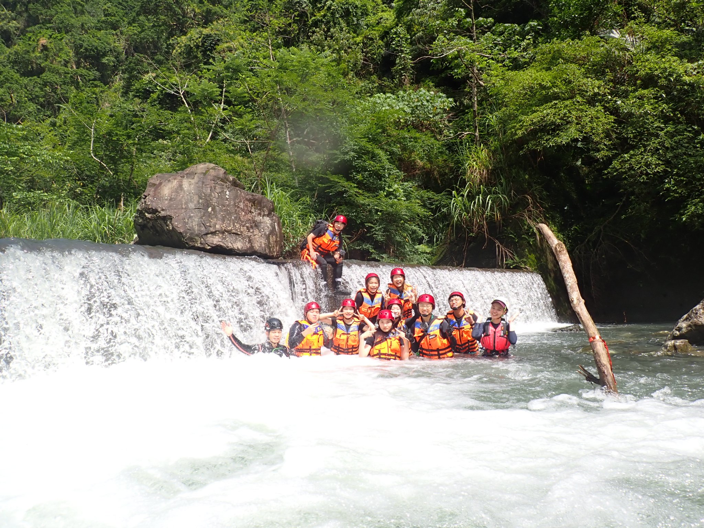

加九寮溪

加九寮溪
日期：2025年05月30日
路線：加九寮溪（餐食自理）
交通：機車、Irent、九人巴
停車點：紅河谷步道（地圖上查看）
個人裝備：溯溪鞋、吊帶、岩盔、救生衣、防水包
公用技術裝備：15M短繩*1
溯行衣物：內層/羊毛衣or排汗衫、動態保暖/powerstretch、雨衣、登山褲or束褲（加短褲）、可以帶進岩盔的鴨舌帽、防水包（食物、頭燈、備用電池、打火機、火種）、乾衣服（放車上）
人員：14人
男女比：3:4
紀錄
0730 世新大學管理學院集合出發
0847 抵達紅河谷步道入口，整裝完畢後出發。溯溪鞋差一雙，智勳與品嘉開Irent回台北拿溯溪鞋。
0851 下切點
0856 進入加九寮溪（攔沙壩上方），攔沙壩上方合照
進山
合照後互助攀登
0942 漂漂河
0959 小休後續行
1026 水超大，拉繩到左岸
1043 在三角石頭下方合照
1201 先鋒架繩。架好的繩可用作稍後滑水道的安全繩。
拉繩橫渡至右岸用餐
1245 午餐
滑水道旁岩壁上的鳥巢，經過時注意不用驚擾、觸碰或傷害到鳥巢。據阿德所說，這個鳥巢2019年就在這邊，期間不斷地經歷被跳倒再重新築巢的過程，在這個位置屹立不倒。
滑水道。今天水太大，一瞬間就下去了。從滑水就滑下來後可以去拉剛剛架好的安全繩（引導繩），順著繩子回到岸上。
跳水。
達波在左岸準備拋繩，跳水或滑水後被帶進漩渦流的人可以透過拉繩脫身。
左圖，在左岸stand by的達波；右圖，正在拉繩的浩宇。
1430 合照後準備離開
1447 從右岸上切後陡上，水平距離100米，高度35米。
1457 陡上後休息平台小休
1500 接紅河谷步道
1527 換裝
1556 賦歸
地圖
← 返回前頁